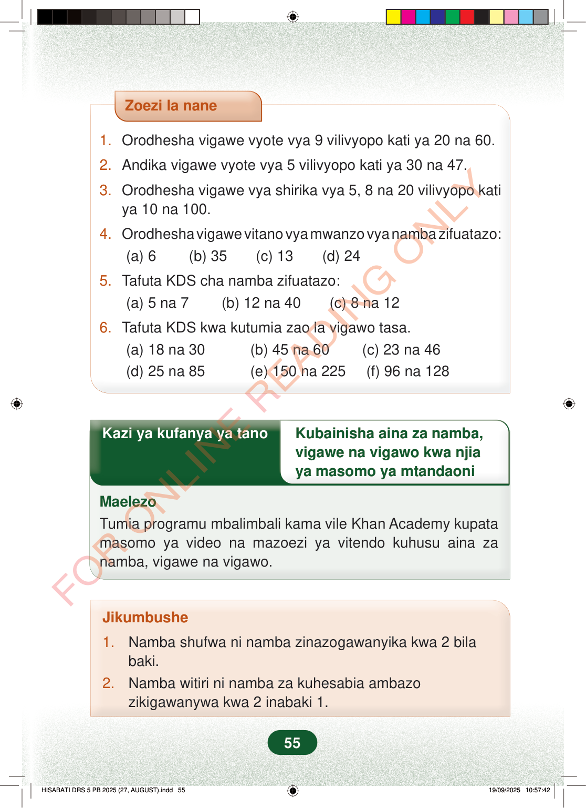

Zoezi la nane1.Orodhesha vigawe vyote vya 9 vilivyopo kati ya 20 na 60.2.Andika vigawe vyote vya 5 vilivyopo kati ya 30 na 47.3.Orodhesha vigawe vya shirika vya 5, 8 na 20 vilivyopo katiya 10 na 100.4.Orodhesha vigawe vitano vya mwanzo vya namba zifuatazo:(a) 6 (b) 35 (c) 13 (d) 245.Tafuta KDS cha namba zifuatazo:(a) 5 na 7 (b) 12 na 40 (c) 8 na 126.Tafuta KDS kwa kutumia zao la vigawo tasa.(a) 18 na 30 (b) 45 na 60 (c) 23 na 46(d) 25 na 85 (e) 150 na 225 (f) 96 na 128Kazi ya kufanya ya tanoKubainisha aina za namba,vigawe na vigawo kwa njiaya masomo ya mtandaoniMaelezoTumia programu mbalimbali kama vile Khan Academy kupatamasomo ya video na mazoezi ya vitendo kuhusu aina zanamba, vigawe na vigawo.Jikumbushe1.Namba shufwa ni namba zinazogawanyika kwa 2 bilabaki.2.Namba witiri ni namba za kuhesabia ambazozikigawanywa kwa 2 inabaki 1.55
Zoezi la nane
1. Orodhesha vigawe vyote vya 9 vilivyopo kati ya 20 na 60.
2. Andika vigawe vyote vya 5 vilivyopo kati ya 30 na 47.
3. Orodhesha vigawe vya shirika vya 5, 8 na 20 vilivyopo kati ya 10 na 100.
4. Orodhesha vigawe vitano vya mwanzo vya namba zifuatazo: (a) 6 (b) 35 (c) 13 (d) 24
5. Tafuta KDS cha namba zifuatazo: (a) 5 na 7 (b) 12 na 40 (c) 8 na 12
6. Tafuta KDS kwa kutumia zao la vigawo tasa. (a) 18 na 30 (b) 45 na 60 (c) 23 na 46 (d) 25 na 85 (e) 150 na 225 (f) 96 na 128
Kazi ya kufanya ya tano Kubainisha aina za namba,
vigawe na vigawo kwa njia ya masomo ya mtandaoni
Maelezo Tumia programu mbalimbali kama vile Khan Academy kupata masomo ya video na mazoezi ya vitendo kuhusu aina za namba, vigawe na vigawo.
Jikumbushe
1. Namba shufwa ni namba zinazogawanyika kwa 2 bila baki. 2. Namba witiri ni namba za kuhesabia ambazo zikigawanywa kwa 2 inabaki 1.
55
Zoezi la nane lenye maswali sita ya hisabati kuhusu vigawo vya 5 na 9, vigawo shirika vya 5, 8 na 20, pamoja na kutafuta KDS ya jozi za namba.Zoezi la nane1.Orodhesha vigawe vyote vya 9 vilivyopo kati ya 20 na 60.2.Andika vigawe vyote vya 5 vilivyopo kati ya 30 na 47.3.Orodhesha vigawe vya shirika vya 5, 8 na 20 vilivyopo kati ya 10 na 100.4.Orodhesha vigawe vitano vya mwanzo vya namba zifuatazo:(a) 6(b) 35(c) 13(d) 245.Tafuta KDS cha namba zifuatazo:(a) 5 na 7(b) 12 na 40(c) 8 na 126.Tafuta KDS kwa kutumia zao la vigawo tasa.(a) 18 na 30(b) 45 na 60(c) 23 na 46(d) 25 na 85(e) 150 na 225(f) 96 na 128Kazi ya kufanyia ya tano kuhusu kubainisha aina za namba, vigawe na vigawo kwa njia ya masomo ya mtandaoni. Maelezo yanamwambia mwanafunzi atumie programu kama Khan Academy kupata video na mazoezi ya vitendo.Kazi ya kufanya ya tanoKubainisha aina za namba, vigawe na vigawo kwa njia ya masomo ya mtandaoniMaelezoTumia programu mbalimbali kama vile Khan Academy kupata masomo ya video na mazoezi ya vitendo kuhusu aina za namba, vigawe na vigawo.Kikumbusho kinachoeleza kuwa namba shufwa hugawanyika kwa 2 bila baki, na namba witiri zikigawanywa kwa 2 hubaki 1.Jikumbushe1.Namba shufwa ni namba zinazogawanyika kwa 2 bila baki.2.Namba witiri ni namba za kuhesabia ambazo zikigawanywa kwa 2 inabaki 1.